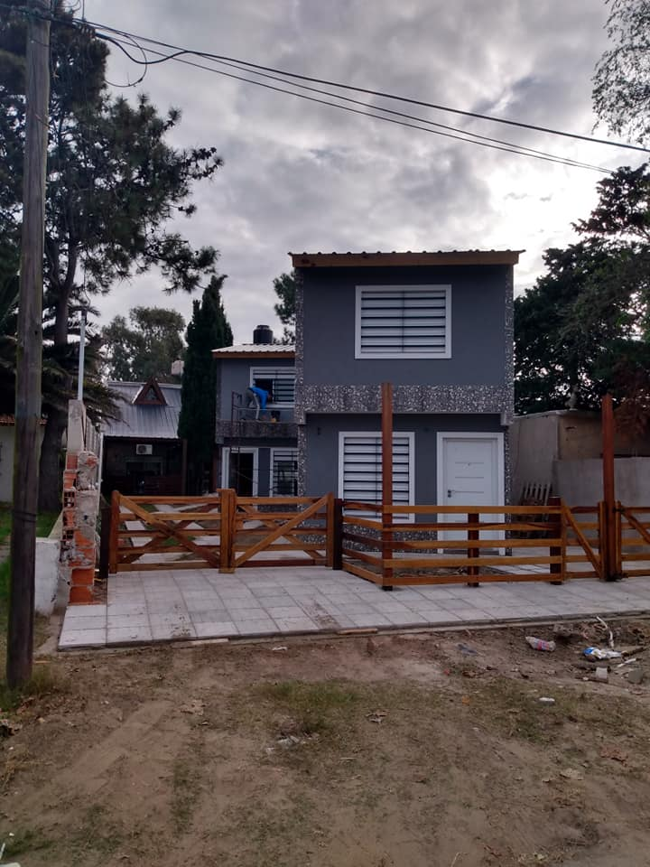

- 

Cel: 11 5690-9484 | jfp2605@outlook.com
Estamos en la zona céntrica de "LAS TONINAS" a tres cuadras del mar y dos de la peatonal.
A una cuadra del anfiteatro central, donde se celebra el cumpleaños de la ciudad todos los 20 de febrero, con espectáculos gratuitos....
Ver más
 Duplex nº2 "La comarca I"
Duplex nº2 "La comarca I"
La MEJOR opción, para TUS vacaciones!!!
Chalet "La Comarca II"
La MEJOR opción, para TUS vacaciones!!!
Departamentos "La Comarca III"
La MEJOR opción, para TUS vacaciones!!!
Departamento calle 1
La MEJOR opción, para TUS vacaciones!!!

"Las Toninas" cuenta con un anfiteatro central, donde se celebra el cumpleaños de la ciudad todos los 20 de febrero, con espectáculos gratuitos, una feria artesanal y comidas regionales.
En "Las Toninas" se celebran los carnavales con los distintos artistas y comparsas alusivas a la fecha.

En "Las Toninas" encontrás el único laberinto natural de la costa, un lugar distinto para disfrutar en familia.
Se encuentra entre las calles 16 a 14 y de 7 a 9, y está abierto de 9 a 20. Durante la temporada se realizan juegos ('la caza del fantasma') y durante semana santa se representa el 'via crucis'.
jfp2605@outlook.com
Cel.:(011) 15.5690.9484 | 15.4526.6280
El complejo 1 esta ubicado en calle 5
(Nº 1568) entre 34 y 36
El complejo 2 esta ubicado en calle 5
(Nº 1547) entre 34 y 36
El complejo 3 esta ubicado en calle 48
(Nº 457) entre 7 y 9
El complejo 4 esta ubicado en calle 36
(Nº 429) entre 7 y 9
El departamento esta ubicado en calle 1
(Nº 990) entre 24 y 22
 Hablanos por Whatsapp
Hablanos por Whatsapp